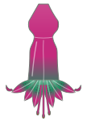
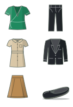
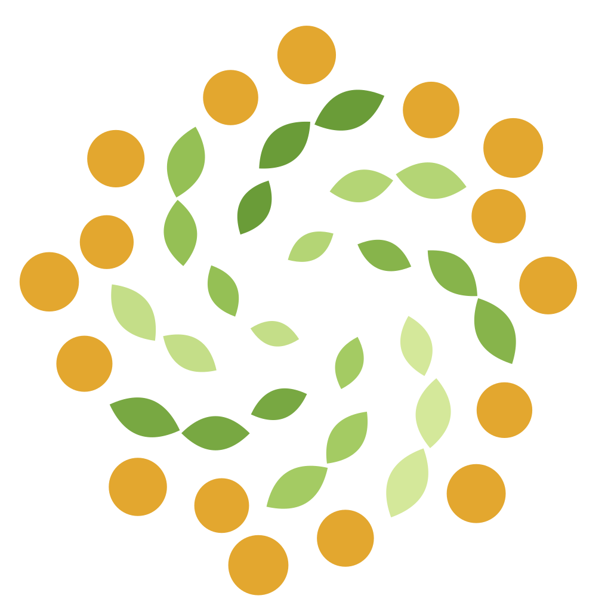
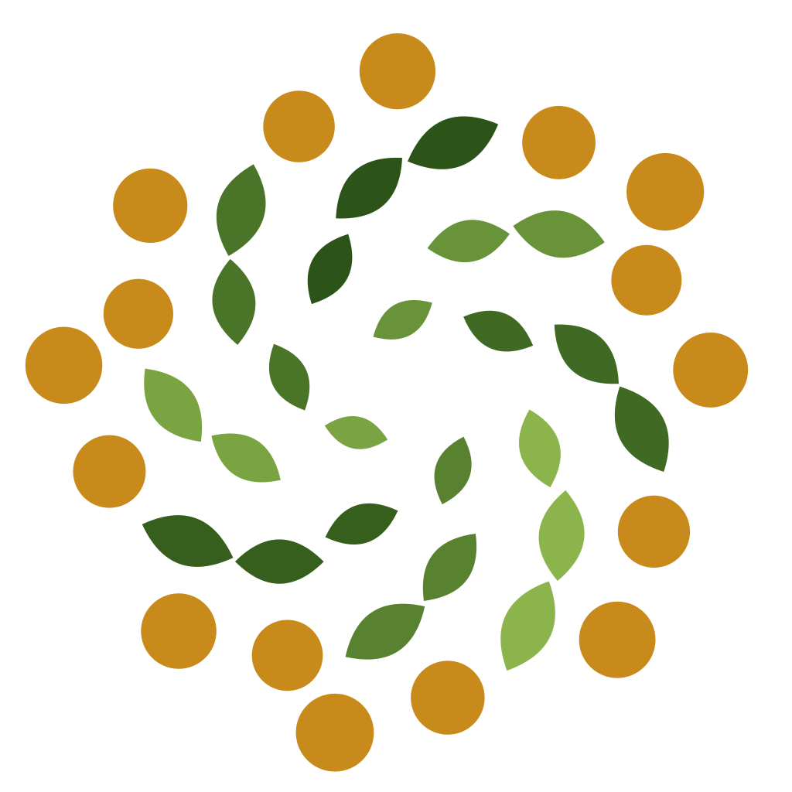

Evolución algoritmo genético
Sobreviven los mejor adaptados. La naturaleza no revisa todas las opciones: prueba algunas, se queda con las que mejor funcionan, las mezcla y deja que cambien un poco. Repite eso muchas veces y aparece algo que encaja.
Nace del capítulo 1 y del capítulo 3 del Diseñador de la primavera.
- genes
- población
- fitness
- selección
- cruce
- mutación
Generación 1 · las abejas prefieren
Sobreviven las flores más parecidas a ese color; las demás se marchitan y su lugar es para hijas de las que quedan. A veces nace una flor mutante: búscala y tócala.
Experimentos
Del más nuevo al más viejo. Cada uno muestra mejor una parte distinta del algoritmo.
-

NUEVO03 · nov 2026El vestido mutante
Un vestido que nunca ha existido, diseñado mutación a mutación con formas de la naturaleza.
Enseña: la mutación, los cambios por sorpresa, y candados para elegir qué no cambia.
-

02 · nov 2026Tu armario cápsula
Pocas prendas básicas que te favorecen, combinan entre sí y alcanzan para tu semana.
Enseña: la selección: la evolución elige sola y se compara con el azar.
-


01 · oct 2026Tu semana de comidas
Llegar a lo que tu cuerpo necesita, comiendo lo que te gusta.
Enseña: los genes y el fitness: cómo se describe una solución y cómo se mide si es buena.